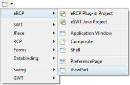
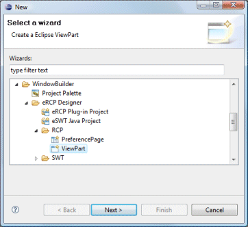
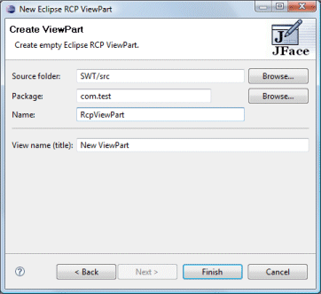

|
Subclasses of the RCP ViewPart class can be
created using the RCP ViewPart wizard. The wizard can be
selected from the drop down WindowBuilder wizard menu or from the
Eclipse New wizard.
To use the wizard, select the project source folder and package to contain the class. Then enter the class name, view name/title and hit the Finish button.
  The wizard generates the following code.
When editing RCP ViewParts, all of the standard SWT layouts, containers and widgets are available. Custom or third party controls may be added via the Choose Component command. |